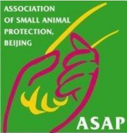
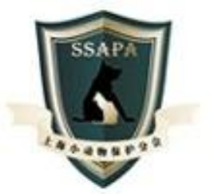
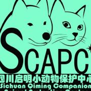

宠物之家
首页
宠物品种
全部
犬类
猫科
喂养冷知识
犬类
喵咪
其他
萌宠趣闻
宠物故事
搞笑图片
流浪动物
救助热线
联系我们
自制宠粮
国内部分小动物救助中心
中国小动物保护协会
电话：010-82135190
北京宠爱非保护类小动物救助中心
电话：010-84046851

北京市保护小动物协会
电话：010-84120775
电子邮箱：yangguang_161@sina.com

上海小动物保护协会
电话：021-62511789 021-62112635
湖南小动物保护协会
电话：0731-4692840
哈尔滨市小动物保护协会
电话：82730003

四川省启明小动物保护中心
电话：028-81216647
武汉市小动物保护协会
电话：027-86931210
返回顶部（第1页）
上一页
1
2
3
下一页
宠物之家有限公司 网址：www.pets.com 电话：0791111111 email：7******9@qq.com